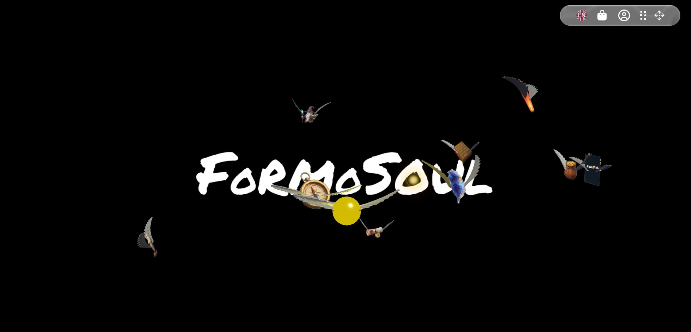
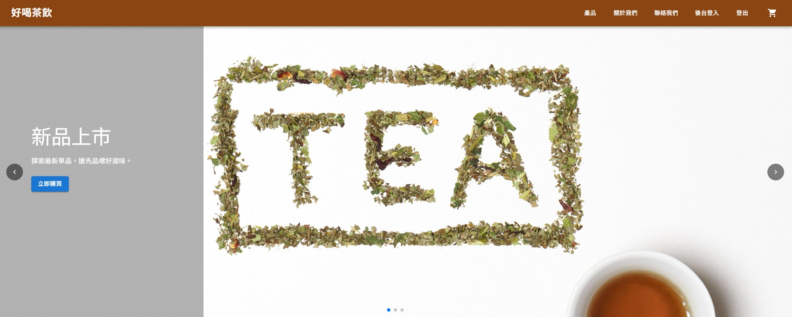
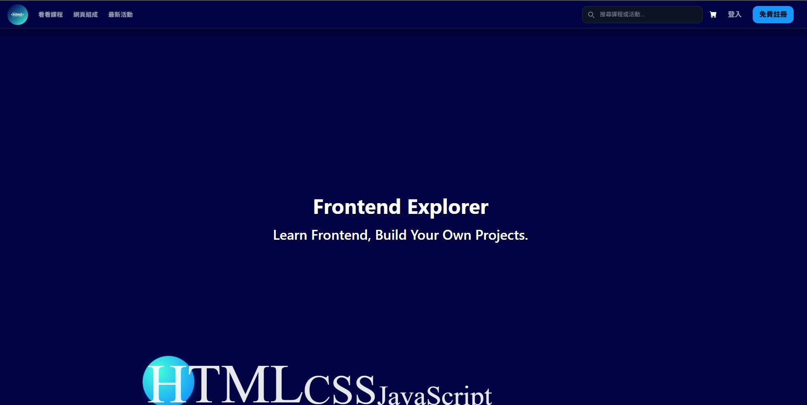
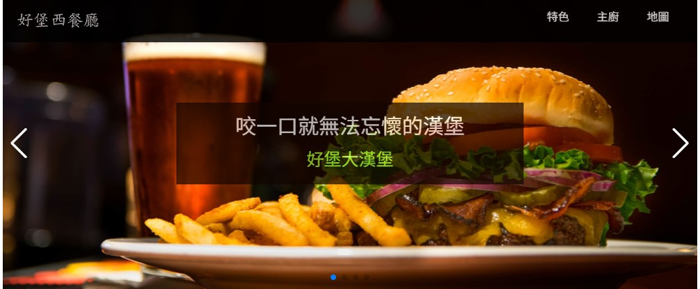
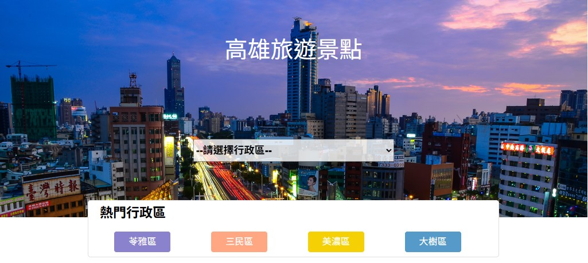

工作經驗
Vue前端工程師
東利租賃有限公司- 維護舊官網，負責除錯及修復線上問題，確保網站穩定運作。
- 依照主管需求，協助新增與優化網站功能，提升使用者體驗。
- 參與新官網的切版與前端開發，負責 RWD 版型製作及調整。
網頁設計師
沃特奇企業有限公司- 製作 WordPress 一頁式網站，負責網站架構規劃、內容編排與RWD響應式設計。
- 運用 Photoshop、Illustrator、Canva 進行網站所需圖片設計與編輯，提升視覺效果。
- 使用 Premiere Pro 剪輯與製作宣傳影片，強化網站多媒體內容表現。
研發工程師
尚志精密化學股份有限公司- 改良及優化既有配方，提高產品性能及穩定性。
- 協助樹脂新配方的研發。
- 進行物理與化學性質檢測，確保產品品質。
專長與核心技能
❖ 前端框架與架構
- 專精 Vue.js 框架開發，熟悉組件化設計與生命週期管理。
- 具備 React.js 基礎開發概念。
- 使用 Vite 進行專案建置與打包優化。
- 熟練使用 Element Plus UI 庫快速建構介面。
❖ 前端核心與切版
- 熟悉 HTML5 / CSS3 / JavaScript (ES6+)。
- 具備 RWD 響應式網頁切版能力。
- 使用 SCSS (Sass) 預處理器與 Bootstrap 進行模組化樣式管理。
❖ 視覺互動與特效
- 運用 Three.js 實作 3D 網頁場景，提升使用者沉浸式體驗。
- 使用 GSAP 製作高效能網頁動態與轉場特效。
- 熟悉 Lenis 進行平滑滾動 (Smooth Scroll) 處理，優化瀏覽體驗。
❖ 後端整合與協作
- 熟悉 Git 版本控制流程，使用 GitHub 與 SourceTree 進行多人協作管理。
- 具備 PHP 與 MySQL 基礎，能夠進行後台邏輯實踐與資料庫操作。
- 熟悉前後端分離架構，透過 AJAX/Axios 串接 RESTful API (如 LINE Login)。
自傳
Vue.js 前端工程師 | 7人團隊開發組長 | 具備 3D 網頁互動實作經驗
擁有跨框架學習能力 (Vue/React)，並持續精進 TypeScript 型別系統
我是前端工程師，擁有化學工程背景培養的嚴謹邏輯，以及網頁設計師經歷帶來的視覺敏銳度。我使用 Vue.js 生態系開發高互動性的網頁應用，同時具備跨框架的學習能力，曾獨立將 Vue 2 專案復刻為 React 版本。我不僅能精準還原 Figma 設計稿，更能透過 Three.js 實現 3D 特效，GSAP 呈現動畫，並結合後端 PHP/MySQL 知識，致力於打造「視覺驚豔」且「系統穩定」的使用者體驗。
沉浸式台灣文化推廣平台 (團體專案 - 組長 / 7人團隊)
擔任組長與核心開發，一手整合前台的 3D 沉浸式體驗與後台 CMS 管理系統。除了負責關鍵技術實作，更致力於團隊進度控管與跨職能溝通：
- 團隊領導與敏捷開發：主導 7 人團隊的開發節奏，追蹤進度並給予困難協助。扮演導師與組員間的溝通橋樑，有效協調技術分工與資源分配，確保團隊目標一致。
- 建立高紀律的協作流程 (Git Flow)：面對多人協作可能產生的代碼衝突，一起制定了明確的分支規範與開發 SOP (如：「每日結算 Push、開始前先 Pull」)。透過嚴格執行此紀律，在衝刺期達成「零嚴重衝突」，確保功能如期交付。
- 跨端技術溝通與整合：作為前後端溝通的橋樑，我主動釐清資料串接規格。例如在圖片上傳實作中，評估資料庫負載，最終與後端達成共識採用「路徑儲存方案」取代 BLOB，並統一 API 回傳格式，成功解決效能瓶頸並降低前端渲染延遲。
- 技術效能優化 (Three.js/GSAP)：針對 3D 場景的高運算需求，我於 Vue 生命週期中實作 Three.js 的資源釋放，防止切換頁面時的記憶體洩漏，確保在複雜動畫運算下，網站仍保持流暢體驗。
- 後台系統與資安實作：使用 Element Plus 建構管理介面，並利用 Vue Router 導航守衛實作角色權限控管，確保只有授權管理員能進入特定頁面。同時整合 LINE Login，提升系統安全性與便利性。
不侷限於單一技術框架，具備快速適應新工具的彈性與實戰力：
- 跨框架復刻能力 (Vue to React)：曾主動自學 React，並將既有的 Vue 2 作品成功復刻。此過程讓我深刻理解不同框架在 Component Lifecycle 與 State Management 上的差異，證明我能快速適應團隊不同的技術棧。
- 未來導入 TypeScript：為了提升程式碼的強健性與可維護性，目前正深入鑽研 TypeScript，致力於在未來的專案中導入型別檢查系統，減少 Runtime Error，向企業級開發標準看齊。
- 嚴謹的 Debug 思維 (化工背景)：過去四年的研發工程師經歷，培養了我細心與遵從 SOP 的習慣。這讓我在面對程式 Bug 時，能運用實驗精神冷靜排查。
- 設計師視角 (UI/UX 經驗)：曾任網頁設計師，熟悉 Figma 與 Wireframe 繪製。這讓我能深刻理解設計規範，精準控制 RWD 斷點，大幅降低與設計團隊的溝通成本。
【結語】
雖然職涯曾有短暫的嘗試，但這成為我技術爆發的契機。從 Vue 的精通、React 的涉獵到 TypeScript 的深造，我已準備好將這份對技術的熱情與實戰能力投入貴公司，成為能解決問題、持續進化的前端工程師。
專案作品集

緯育養成班 Vue3 團體專案
tibamef2e.com/tjd103/home

React 電商專案
react-ecommerce-tea-website.vercel.app

緯育養成班 個人專案
github.io/tibame-personal-project

餐飲 HTML 專案
github.io/demoproject-HTML

高雄旅遊景點 (API 串接)
github.io/demoproject-JS
專業技術養成班 結業證書
機構單位：緯育 TibaMe
完成時間：2026/01/16
證書編號：WW26TMAZ00317